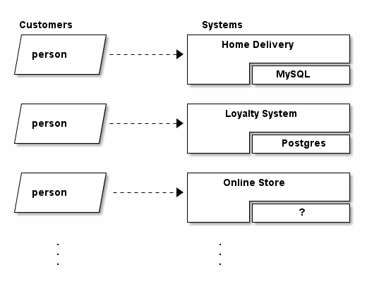
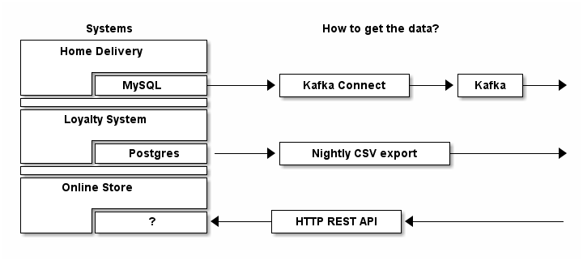
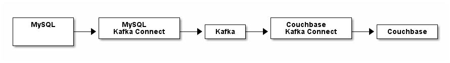
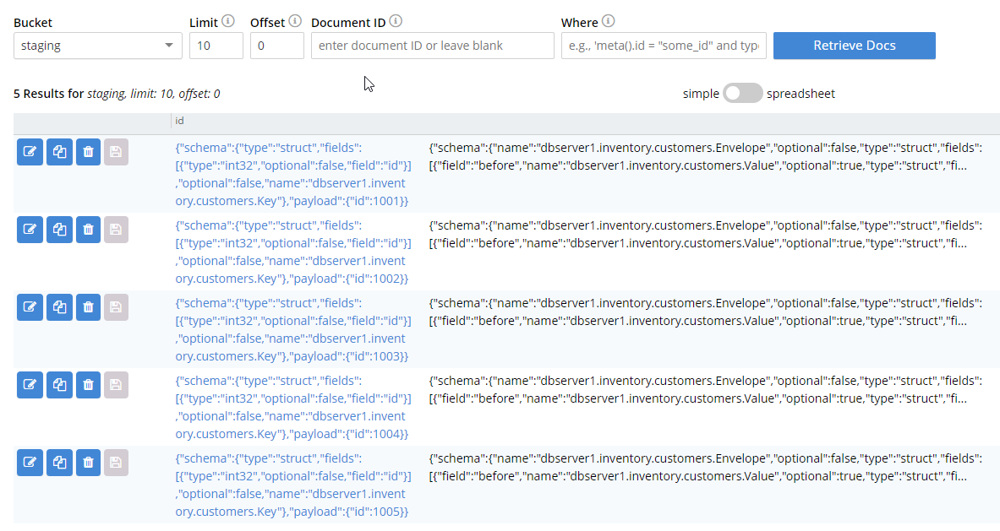
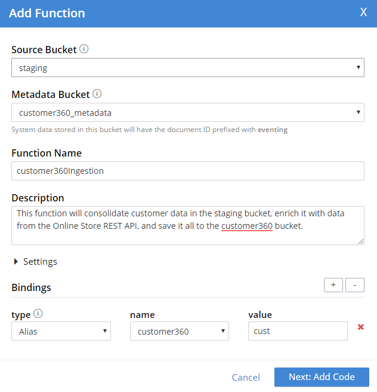

Customer 360 Data Ingestion
This tutorial contains 7 main sections:
-
Customer 360 Introduction: What does it mean? What is the use case?
-
Data Ingestion Overview: How and why are we ingesting data?
-
Data Ingestion example with Kafka: Using Kafka and Kafka Connect to setup a real-time data pipeline
-
Data Ingestion example with CSV: Creating a (nightly) job to import data from a CSV file
-
Data Ingestion with HTTP REST API polling: Planning to use CURL/HTTP to ingest data
-
Data Integration with Couchbase Eventing Functions: putting all the pieces together
-
Summary and next steps: Once you have the data ingested, where do you go from there?
Prerequisities: this is a tutorial about a data ingestion architecture. It is not necessarily a step-by-step guide on creating everything from start to finish. There are so many variables to take into account, that it would be impossible to cover all of them. But, generally speaking, the prerequisites are:
-
An enterprise with multiple data-backed systems.
-
Some way for data to be copied/piped/streamed from those systems (this tutorial covers Kafka, CSV, and HTTP, but there are a myriad of other ways to move data around).
-
A Couchbase Server cluster with (at least) one node that has the Eventing service enabled.
-
Optional: Docker. If you plan on building an entire "toy" environment and following this tutorial exactly, Docker will help you. However, Docker is not necessary to the most crucial parts of this tutorial.
Customer 360 Introduction
The goal of a Customer 360 system is to deliver a single, consistent view of all your data in one platform within an enterprise where that data is split up between many different systems. This tutorial will be focusing mainly on getting a complete view of a customer/person.
Retail as an example
Let’s assume our enterprise is a retail organization. Within this organization, there can be many separate components:
-
Home Delivery - a system dedicated to received delivery orders from a customer and making sure they get delivered to their homes.
-
Loyalty Program - a system dedicated to tracking and rewarding your most loyal customers with incentives.
-
Online Store - a system which allows the users to place orders from their browser/phone/etc. A customer cam pick them up, have them shipped, etc.
There are many more systems, especially as your retail organization grows. Perhaps another system is acquired via acquisition, another is created by a successful hackathon project, and perhaps there are even 3rd party systems that are business critical. Some of these systems may even communicate with each other.
What do the parts have in common?
But what these systems all have in common is that they are separated in some way, and typically have their own data store.

In this example, the home delivery system is backed by a MySQL database, the loyalty system is backed by Postgres, and we’re not even sure what the online store is backed by.
What we do know is that an individual may interact with any of these systems. That is, a person might only use the home delivery system, they might only use the online store, or they might use 2 or 3 them.
From the person’s external point of view, they are all part of the same business. From an internal technology point of view, they are all separate parts. BUT, to best serve a customer and/or gather insights about our customers on the whole, we’d have to piece together data from these 3+ systems.
This is where Customer 360 comes in. We’ll build a system to get as many pieces of the whole customer as we can, and put them together into one system.
Data Ingestion Overview
The first step with data ingestion is to answer the question: "how can we get the data?" The answer to this question is going to vary wildly. But for purposes of this tutorial, let’s assume that we’ve researched each system and discovered the most optimal method currently available:

In this diagram, we’ve made the following determinations about the most optimal way to get data:
-
Home Delivery: We’re in luck! The Home Delivery team has agreed to (or already has) connected their MySQL database as a "source" to Kafka via Kafka Connect. We can setup Couchbase as a Kafka "sink" and start ingesting data in real time.
-
Loyalty System: The situation is less ideal here, but the Loyalty System team has agreed to (or previously has) created a nightly job that exports all of their customer data to a CSV file. This means that the loyalty data could be as old as 24 hours, but it’s a start!
-
Online Store: Making things more tricky, the only way to access data externally in this system is via a REST API. We can ask for a data about one customer at a time. So instead of data coming to our Customer 360 system, our Custoemr 360 system has to poll for the data.
There are many other ways that data can flow or be accessed, but this tutorial is going to focus on these three. In an ideal world, we could use a single method (like Kafka) to move data from all systems through the enterprise, but few enterprises exist in such a world.
Data Ingestion example with Kafka
The Home Delivery team is using a MySQL database. We want to get customer data from that system into a Couchbase "staging" bucket. A simple view of this architecture will look like this:

Let’s break down each of these parts:
-
MySQL. This is a popular relational database. In the Home Delivery system, there may be many tables containing data. Our Customer 360 system is only interested (for now) in the data that’s in a customer table. The Home Delivery system will make updates and inserts to this table on a regular basis as part of day-to-day business.
-
Kafka. Kafka is a streaming platform. It’s similar to a queue: sources put messages into a topic, and sinks read the messages from those topics. Kafka has a distributed architecture, meaning that it can be scaled up as necessary.
-
Kafka Connect. Kafka Connect is a framework for connecting data sources and data sinks to Kafka. There are many Kafka Connect plugins available, including Debezium for MySQL and a Couchbase Kafka Connector.
-
Couchbase. This is the data platform that will hold all the Customer 360 data. To start with, we’ll just put data into a bucket called staging. Later, we’ll integrate this data into a customer360 bucket. Couchbase, like Kafka, has a distributed architecture, which provides excellent scaling capabilities.
For this tutorial, I used some basic Docker commands to get all the pieces working. In your enterprise, you may or may not be using some combinatino of containers, VMs, Kubernetes, bare metal, cloud services, etc. This tutorial will not go into all those details.
In your organization, you may already have Kafka running. If so, skip to MySQL to Kafka Connect. If you already have MySQL and Kafka Connect talking, you can skip to Kafka Connect to Couchbase.
Installing Couchbase
There are multiple ways to install Couchbase. I’m using basic Docker commands in this tutorial to keep it simple. However, for a more robust deployment, you may want to take a look at the Couchbase Kubernetes Autonomous Operator.
I executed the following Docker command to start Couchbase:
docker run -d --name db -m 4gb -p 8091-8096:8091-8096 -p 9140:9140 -p 11210:11210 --link kafka:kafka couchbase:enterprise-6.0.1Once it was installed, I went through the normal setup process (make sure that Eventing is selected) and created a bucket called staging. You will also need two other buckets later, so you may as well create them now: customer360 and customer360_metadata.
Kafka
For this tutorial, I relied heavily on Kafka and Debezium documentation. Debezium has published a quick start tutorial on setting up Kafka and Kafka connect (including Zookeeper). It’s a great tutorial, and since I’ll be using Debezium’s MySQL connector anyway, it’s a great place to start.
To get started with Kafka, I ran Docker images like so:
docker run -it --rm --name zookeeper -p 2181:2181 -p 2888:2888 -p 3888:3888 debezium/zookeeper:0.9
docker run -it --rm --name kafka -p 9092:9092 --link zookeeper:zookeeper debezium/kafka:0.9Zookeeper is required for Kafka, so I executed that first. After that started, I ran the Kafka image. In your enterprise, I’m assuming that a MySQL database already exists, but if you want to create one just to follow along with this tutorial, you can use a Debezium provided MySQL database that already contains sample data:
docker run -it --rm --name mysql -p 3306:3306 -e MYSQL_ROOT_PASSWORD=debezium -e MYSQL_USER=mysqluser -e MYSQL_PASSWORD=mysqlpw debezium/example-mysql:0.9At this point, you have Kafka (+Zookeeper) and MySQL running.
MySQL to Kafka Connect
For this tutorial, we’ll be relying on the Debezium MySQL connector. There are other options for using MySQL with Kafka Connect. I have chosen Debezium because of how easy it was for me to get started with it, but depending on your situation, you may want to check out other connectors.
Getting started with the Debezium MySQL connector is as easy as running another Docker image:
docker run -it --rm --name connect -p 8083:8083 -e GROUP_ID=1 -e CONFIG_STORAGE_TOPIC=my_connect_configs -e OFFSET_STORAGE_TOPIC=my_connect_offsets -e STATUS_STORAGE_TOPIC=my_connect_statuses --link zookeeper:zookeeper --link kafka:kafka --link mysql:mysql debezium/connect:0.9However, before you do that, I would recommend reading the next step about using the Couchbase Kafka Connector.
Once the above Connect image is running, you can configure and start the connector with a single call to Kafka Connect’s REST API. Specifically, you can make a call like this:
POST http://localhost:8083/connectors/
{
"name": "inventory-connector",
"config": {
"connector.class": "io.debezium.connector.mysql.MySqlConnector",
"tasks.max": "1",
"database.hostname": "mysql",
"database.port": "3306",
"database.user": "debezium",
"database.password": "dbz",
"database.server.id": "184054",
"database.server.name": "dbserver1",
"database.whitelist": "inventory",
"database.history.kafka.bootstrap.servers": "kafka:9092",
"database.history.kafka.topic": "schema-changes.inventory"
}
}Take special note of database.server.name and database.whitelist. After you POST this (see more about the Kafka Connect REST API here), data will immediately start flowing from MySQL into Kafka.
Kafka Connect to Couchbase
At this point, data is flowing into Kafka whenever it’s added or updated in MySQL. The last step is to get Couchbase to listen to this flow of data and ingest it into the staging bucket.
Couchbase has created and supports a Kafka Connector. Be sure to read that documentation and quick start guide. For this tutorial, we’re going to put the Couchbase Kafka Connector inside the same image as used in the above step.
Custom Docker Image
Once again, Docker is not a prerequisite for using Couchbase Kafka Connect (or anything in this tutorial). But for convenience sake, I created a customer Docker image that has both the MySQL connector and the Couchbase connector in it:
Unresolved include directive in modules/customer-360/pages/ingestion.adoc - include::../examples/docker-connect-couchbase/Dockerfile[]To build this custom docker image on your machine, start by downloading the kafka-connect-couchbase-X.X.X.jar file and placing in the same directory as the above Dockerfile. Then execute this Docker command:
docker build . --tag couchbasedebezium(I used couchbasedebezium but you’re free to name it whatever you’d like).
Running the Custom Connect Image
Once that custom image is created, execute it like so:
docker run -it --rm --name connect -p 8083:8083 -e GROUP_ID=1 -e CONFIG_STORAGE_TOPIC=my_connect_configs -e OFFSET_STORAGE_TOPIC=my_connect_offsets -e STATUS_STORAGE_TOPIC=my_connect_statuses --link zookeeper:zookeeper --link kafka:kafka --link mysql:mysql --link db:db couchbasedebeziumNotice that this is identical to running the debezium image as in the last section, except for two things:
-
It’s linking to db (which is where I’m running Couchbase)
-
It’s running my
couchbasedebeziumimage
Starting the Connector(s)
When this image starts, you can again make REST requests to start data flowing. To start the Couchbase connector:
POST http://localhost:8083/connectors/
{
"name": "home-delivery-sink",
"config": {
"connector.class": "com.couchbase.connect.kafka.CouchbaseSinkConnector",
"tasks.max": "2",
"topics" : "dbserver1.inventory.customers",
"connection.cluster_address" : "db",
"connection.timeout.ms" : "2000",
"connection.bucket" : "staging",
"connection.username" : "Administrator",
"connection.password" : "password",
"couchbase.durability.persist_to" : "NONE",
"couchbase.durability.replicate_to" : "NONE",
"key.converter" : "org.apache.kafka.connect.storage.StringConverter",
"value.converter" : "org.apache.kafka.connect.json.JsonConverter",
"value.converter.schemas.enable" : "false"
}
}This configuration is largely pulled from the Couchbase Quickstart. Instead of being a text file for the command line, it’s an HTTP POST. Take special note of:
-
connector.class– This is the connector class that lives in the JAR file -
topics– The topics that Couchbase will sink from. -
connection.cluster_address– When I started Couchbase in Docker, I gave it a name of "db" -
connection.bucket, connection.username, connection.password– These are all settings I created when setting up Couchbase.
At this point, data should be flowing into your Couchbase staging bucket, and it will look similar to this:

Those documents contain a lot of information about the data flow. Some of which you might need, some of which you can ignore. But for now, the data is being ingested, and will continue to be ingested in real time as changes are made to the data in MySQL.
Data Ingestion example with CSV
The next part of the enterprise to ingest data from is the Loyalty Program system. Since it’s using Postgres, we could absolutely follow a similar procedure as was done with Kafka in the previous section. However, that’s not always possible. Perhaps the Loyalty Program team doesn’t want the database to connect to Kafka, perhaps they are interested in scrubbing their data first, etc.
There could be any number of reasons, but the end result is that all we have to go on is a nightly CSV export of all the customer data. Well, that’s okay, because we have a few options for ingesting data from a CSV file into the staging bucket in Couchbase.
Using cbimport
The first option is a tool that comes with Couchbase called cbimport. This command line utility is able to import data from CSV (as well as JSON).
For example:
cbimport csv -c couchbase://127.0.0.1 -u Administrator -p password \
-b staging -d file:///data/loyalty_members.csv -g key::#MONO_INCR# -t 4That command will import every record from loyalty_members.csv into the staging bucket.
To run this nightly, you could set up a cron job (or similar) to run shortly after new CSV files appear. You could schedule it or trigger it to run when a new CSV is found. This requires cbimport to have read access to the CSV file, and it requires some understanding of scripting.
Using cbimport is the simplest approach. It is a powerful, flexible tool that will work for you in many situations.
Using a Couchbase SDK
If scripting/cron/cbimport can’t accomplish what you want, you can take the approach of writing your own CSV import tool. You can write a program using any of the Couchbase Server SDKs, including C, .NET, Go, Java, Node, PHP, Python, or Scala (and there are other community supported options).
public async Task ImportCsv()
{
var csvFilePath = GetNewestCsvPath();
if (csvFilePath == null)
return;
// check to make sure it's newer than the file that was imported last time
// if not, then bail out
if (!ThisFileIsNewerThanTheLastImport(csvFilePath))
{
_logger.LogInformation($"Not importing {csvFilePath}");
return;
}
// start importing from CSV into Couchbase
using (var reader = new StreamReader(csvFilePath))
{
using (var csv = new CsvReader(reader))
{
var records = csv.GetRecords<dynamic>();
var documents = new List<IDocument<dynamic>>();
foreach (var record in records)
{
var document = new Document<dynamic>
{
Id = $"loyalty-member-{record.Id}",
Content = record,
Expiry = 90000
};
documents.Add(document);
}
// consider breaking this up into multiple batches
await _bucket.InsertAsync(documents);
}
}
TrackImportComplete(csvFilePath);
}This is a very straightforward approach: it loops through every CSV record, reads it into a C# object, and then sends it to Couchbase. It’s using C#'s async/await functionality as well as the .NET SDK’s batch insert capabilities. This code will also keep track of which CSV files have already been imported, so that no redundant importing happens. It also makes use of a logging library, just in case something goes wrong.
Time-to-live
It’s also worth pointing out that this CSV import code is setting an Expiry of 90000 on each document. Since this is a nightly task, and all of the customers will be exported every day, it’s important to clean up the old staging data. By setting an Expiry, Couchbase will automatically remove these temporary documents in staging after a certain period of time. Couchbase SDKs can set this Expiry (also know as time-to-live or TTL) on a per document basis. You can also choose to set a TTL at the bucket level.
Since the staging bucket is meant to be a place for the initial ingestion of data to appear, but NOT a place for data to be stored long term, using TTL here will save you the headache of having to clean up data.
Data Ingestion with HTTP REST API polling
Finally, we have one more system to ingest data from. In the previous two examples, we set up data pipelines that push the data from their respective systems to Couchbase. The data comes to us.
For this next system, the only way to get data out of it is through a REST HTTP API. Additionally, we have to get data out of it piecemeal. That is, it won’t simply be one request to ingest all the data at once. We can only make requests for one person at a time.
For this tutorial, I’ve constructed a "mock" REST API with the following endpoints:
GET /api/onlineStore/getCustomerDetailsByEmail
GET /api/onlineStore/getOrdersByCustomerId
GET /api/onlineStore/getProductDetailsByProductIdIn reality, a REST API will have a much larger suite of endpoints, including POST, DELETE, PUT, etc, as well as a variety of difference resources. But for the purposes of this tutorial, these three endpoints are all we have available that allow us to retrieve data from the Online Store system.
getCustomerDetailsByEmail endpoint
This endpoint expects an email address to identify the customer you want to get details about. It returns some information about the customer:
GET /api/onlineStore/getCustomerDetailsByEmail?customerEmail=gia_kutch%40oconnell.biz
{
"Id": 1,
"Name": "Matt Groves",
"Email": "matthew.groves@couchbase.com",
"Password": "edzchzmatv5"
}There’s not much here about the customer, but it’s certainly worth ingesting to start with.
getOrdersByCustomerId
This endpoint expects a customer ID (which can be obtained using the previous endpoint). It returns information about all the orders this customer has made:
GET /api/onlineStore/getOrdersByCustomerId?customerId=1
[
{
"OrderId": 1,
"PurchaseDate": "2019-04-25T15:15:5800838522",
"CustomerId": 1,
"Items": [
{ "OrderId": 1, "ProductId": 200, "Quantity": 2, "Price": 87.81 },
{ "OrderId": 1, "ProductId": 400, "Quantity": 4, "Price": 129.86 },
{ "OrderId": 1, "ProductId": 410, "Quantity": 1, "Price": 78.64 },
{ "OrderId": 1, "ProductId": 300, "Quantity": 2, "Price": 25.03 },
{ "OrderId": 1, "ProductId": 110, "Quantity": 2, "Price": 191.92 }
]
},
{
"OrderId": 2,
"PurchaseDate": "2019-04-13T16:15:5801361975",
"CustomerId": 1,
"Items": [
{ "OrderId": 2, "ProductId": 100, "Quantity": 2, "Price": 219.74 }
]
}
]The way this data is being returned indicates that a relational database of some sort is being used behind the scenes. However, much like the Loyalty system, we don’t have any direct access to that database. We must make do with the REST endpoints for now.
There’s a third endpoint, getProductDetailsByProductId, which will return details about a product, given a product ID. For this tutorial, I’m going to ignore this endpoint. However, it will likely become critical to ingest this information efficiently as the Customer 360 system starts to mature (in a future tutorial).
Ingesting this data
One approach to ingesting this data is to again use a Couchbase SDK and write a program. This program could examine our Customer 360 documents, make requests to the API, and update the Customer 360 documents (in the customer360 bucket) with the details that are returned. At the same time, it could gather the order information and put those into the Customer 360 bucket. In psuedo-code:
for each document X in the customer360 bucket B
email = X.email
details = HTTP request to getCustomerDetailsByEmail
orders = HTTP request to getOrdersByCustomerId
update X.details
create order document(s) in B
next XThis could be run on a regular basis, much like the CSV task earlier.
This is a valid approach. However, since we’ll be writing code anyway, this seems like a good opportunity to write a Couchbase Eventing Function. We’ll need this function to consolidate all the other data in staging anyway. And since Functions can make HTTP requests on their own, we can put all this functionality inside of the Couchbase Data Platform, together with the data.
Data Integration with Couchbase Eventing Functions
Everything in this tutorial has lead to this point. There is a staging bucket that contains, for each person, at most two documents: one with data from the home delivery system, one with data from the loyalty system. (Your enterprise may, of course, have dozens of documents, depending on how many systems you’re pulling from). There is also data in the Online Store, waiting to be queries.
Now, it’s time to consolidate information into the customer360 bucket. Let’s manually walk through an example of how the consolidation should look.
Review of available data
In the staging bucket, there are two documents for Matthew Groves. Here is (a truncated version of) the home delivery document:
{
"schema": { ... },
"payload": {
"after": {
"zipcode": "04006",
"password": "5owhiy1j.isq",
"city": "West Evertchester",
"name": "Matthew Groves",
"address_line_1": "600 Sporer Curve",
"phonenumber": "811.128.4320 x4808",
"id": 1029,
"address_line_2": "Suite 528",
"state": "NH",
"email": "matthew.groves@couchbase.com"
},
"source": {
"name": "dbserver1", ...
},
...
}
}And here is a loyalty member document:
{
"id": "27",
"password": "xrinn5xp.swd",
"firstName": "Matthew",
"lastName": "Groves",
"email": "matthew.groves@couchbase.com",
"points": "47"
}Finally, though it doesn’t exist in the staging bucket, here is what we can expect to find when making a REST API request for Matthew Groves:
GET /api/onlineStore/getCustomerDetailsByEmail?customerEmail=gia_kutch%40oconnell.biz
{
"Id": 1,
"Name": "Matthew Groves",
"Email": "matthew.groves@couchbase.com",
"Password": "edzchzmatv5"
}
GET /api/onlineStore/getOrdersByCustomerId?customerId=1
[
{
"OrderId": 1,
"Items": [ ... ], ...
},
{
"OrderId": 2,
"Items": [ ... ], ...
]
}
]Customer 360 Data end state
Based on the data available in staging and the REST API, we want to consolidate all of the above into 3 total documents: 1 for the customer and 2 for that customer’s orders. We want the customer to look like this:
KEY: matthew.groves@couchbase.com
{
"type": "user",
"profile": {
"name": "Matthew Groves",
"address1": "600 Sporer Curve",
"address2": "Suite 528",
...
"loyaltyPoints": "47"
},
"xrefs": [{
"external_system": "online_store",
"external_ID": 1,
"pass": "edzchzmatv5"
},
{
"external_system": "home_delivery",
"external_ID": 1029,
"pass": "5owhiy1j.isq"
},
{
"external_system": "loyalty",
"external_ID": "27",
"pass": "xrinn5xp.swd"
}
]
}There is only one customer document, with consolidated fields like name, but it has three cross-references in which to store system specific data like external_ID and pass.
Since the order data is unbounded (a given customer could have hundreds of orders), the orders are stored in separate documents:
KEY order::1
{
"PurchaseDate": "2019-04-25T15:15:5800838522",
"CustomerId": 1,
"Items": [
{ "OrderId": 1, "ProductId": 200, "Quantity": 2, "Price": 87.81 },
...
]
}
KEY order::2
{
"OrderId": 2,
"PurchaseDate": "2019-04-13T16:15:5801361975",
"CustomerId": 1,
"Items": [
{ "OrderId": 2, "ProductId": 100, "Quantity": 2, "Price": 219.74 }
]
}To recap, we expect 1 customer document to be created/updated out of 3+ total pieces of enterprise data. We expect all order documents to be copied over from the online store for a given customer.
Create an Integration Function
This tutorial assumes you have some familiarity with how to create, deploy, and debug Eventing Functions in Couchbase. If not, please take the time to look through the fundamentals and work through some of the eventing service examples.
Since this will be a relatively complicated function, I decided to start by writing it as a plain Node.JS application, and test it with a series of Mocha unit tests. If you elect to do this, make sure to keep the limitations of the Couchbase Eventing JavaScript engine in mind.
The full source code is available on GitHub. To start with, let’s create a function in the eventing service. Note that creating a function requires the use of a Metadata Bucket, which was mentioned earlier in this tutorial. If you didn’t create it then, it will need to be created now.

Important note: This tutorial was written with Couchbase Server 6.0 in mind. In Couchbase Server 6.5, CURL functionality will be changing. Be sure to check out the blog post Using cURL with the Eventing Service: Update for more details. This tutorial will be (slightly) updated after a Couchbase Server 6.5 release.
OnUpdate Function
The next step is to write the JavaScript that will go into the OnUpdate function. This is the function that will be called for every document that appears in the staging bucket. Hypothetically, the code for the entire integration could live in this function. I’ve elected to break up the functionality into testable functions as much as possible:
function OnUpdate(doc, meta) {
// when an email comes along, save it here for later
// to poll the Online CRM API
var emailToPollOnlineCRM = '';
if(IsUserDelivery(doc)) {
emailToPollOnlineCRM = IngestUserDelivery(doc, cust, log);
}
if(IsLoyaltyMember(doc)) {
emailToPollOnlineCRM = IngestLoyaltyMember(doc, cust, log);
}
if(emailToPollOnlineCRM) {
PollOnlineCrm(doc, emailToPollOnlineCRM, cust, curl, log);
}
}The functions IsUserDelivery and IsLoyaltyMember make the determination as to what kind of document is being examined.
IsUserDelivery/IsLoyaltyMember
For example, IsUserDelivery looks for payload source name, which was supplied by the Debezium connector:
function IsUserDelivery(doc) {
if(doc.payload)
if(doc.payload.source)
if(doc.payload.source.name)
return doc.payload.source.name === 'dbserver1';
return false;
}IsLoyaltyMember is similar. Next, IngestUserDelivery performs the actual creation or update of a Customer 360 document, using the User Delivery information:
function IngestUserDelivery(doc, cust, log)
{
log('INGEST', 'User Delivery System');
var email = doc.payload.after.email;
var customerDoc = GetCustomer360DocIfItExists(cust, email);
if(!customerDoc) {
customerDoc = {};
}
customerDoc = UpdateCustomerDocFromUserDelivery(customerDoc, doc);
cust[email] = customerDoc;
return email;
}It’s a good idea to keep these functions small so that they are readable and testable. In fact, this function has cust and log as parameters, even though they are technically available without being parameters. However, if I’m testing this with Mocha, I can inject fakes/mocks into those parameters. An example of a Mocha unit test:
it('should create a new customer 360 doc if one doesnt exist', function() {
var expectedDocKey = doc.payload.after.email;
eventing.IngestUserDelivery(doc, cust, log);
assert.notStrictEqual(cust[expectedDocKey], undefined);
});Use caution when developing with Node/Mocha. It can help speed up your development, but be sure not to use any NPM packages or any functionality that is not available to the Couchbase Eventing JavaScript engine. Additionally, there are some features that have been added that are not typically available with most JavaScript engines. Proceed with caution.
Integrating with REST
The last step of the function involves making REST requests to the Online Store API.
function PollOnlineCrm(doc, email, cust, curl, log)
{
var customerDoc = GetCustomer360DocIfItExists(cust, email);
customerDoc = UpdateCustomerDocFromOnlineStore(customerDoc, email, cust, curl, log);
}Again, note that CURL functionality is changing in Couchbase Server 6.5, but here is the relevant portion of UpdateCustomerDocFromOnlineStore for Couchbase Server 6.0 with the unsupported developer preview functionality:
var onlineStoreCustomerDetailsUrl = "http://172.17.0.8/api/onlineStore/getCustomerDetailsByEmail?customerEmail=" + email;
var onlineStoreCustomerDetails = curl(onlineStoreCustomerDetailsUrl, { "method" : "GET"});In this case, the base URL is hard-coded. With Couchbase Server 6.5, the URL will be a binding that you specify when creating the function. The result of curl in this case is a JavaScript object that can be ingested into the customer 360 document in the same manor as the other integrations.
After the function is deployed, it will immediately go to work on the documents in the staging bucket, and documents will start to appear in the customer360 bucket.
Summary
At this point, the data ingestion process is well underway. The customer360 bucket will start to be populated with information from our customers. If you’re using nightly CSV imports, it may take that long for all of the data to show, but at least you have a head start.
So now that we have a bucket containing complete pictures of our customers, what do we do next?
The initial goals may be just to use this Customer 360 data in a "read-only" fashion:
-
Build a customer dashboard to view all the details of a specific customer
-
Build an enterprise dashboard to view aggregate information about the entire customer base
-
Use the customer 360 data as input to machine learning or recommendation algorithms (e.g. "customers who bought the same items as you were also interested in X").
However, the longer term goal may be to transition/move/replace/transform some or all of these individual systems to use Couchbase as a primary data store.
Either way, the first step is to start ingesting data into Couchbase. Now that we have this solid foundation in place, future tutorials will explore all the options that the Couchbase Data Platform can provide.